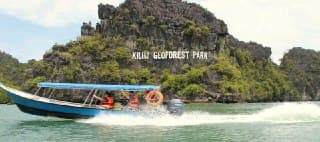

Kedah is located up north in Malaysia, close to the border of Thailand and is considered the “rice bowl” of Malaysia, where half of the country’s rice production originated from here. So, if you are planning a travel to this state, here are some suggestions of the must-visit places for you to consider.
PLACES TO VISIT
EAGLE SQUARE (DATARAN LANG)
- Is a square on Langkawi near the port where ferries sail in and out
- In the square is a giant statue of an eagle poised to take flight and the eagle is almost 40 feet tall
- Offers gorgeous views of Kuah Bay that leads into the sea and the surrounding mountains
- After dark, the square and the eagle are illuminated with lights.
CENANG BEACH (PANTAI CENANG)
- Earned with its white sand and great spot to watch the delightfully sunrise and sunset
- The fine white sand beach at the island is fringed by coconut trees and casuarinas
- The stretches beach of 2 km was filled with great line of amusing resorts, chalets and restaurants
- Located near to Kuah Town, it does make shopping easier in getting great bargain on the duty-free island
KILIM GEOFOREST PARK

- Is a fascinating place that is home to mangroves, karst hills and beaches
- You can hire a boat to travel through the caves, the mangrove forest and out into the open sea
- If you are lucky, you will be able to spot eagles in the sky.
MNM HOME WHIMSICAL HOUSES

- This place feels like an Alice in Wonderland and the Hobbits movies combined into one
- The houses and structures here were made so quirky and weird that many people will flock here just to experience it for themselves
- Over here, you will be able to see the Hobbit’s hole, the upside-down house and also the Twin Leaning House
PLACES TO EAT
AT SATAY SEMELING
- There is a variety of satays sold and the common selections are chicken, lamb and beef, while more exotic options such as tripe, venison or rabbit satays
- Another specialty is Ayam Percik – roasted, skewered chicken pieces smothered with the Percik gravy
- Located at F12 Kg Paya Suri, Semeling 08100 Bedong, Kedah
CHOOI PENG SEAFOOD
- Famous for its fresh and huge mantis shrimp
- Also serves a variety of other fresh seafood like prawns, crabs, squid, and various types of fishes!
- Located at Sungai Petani No.187, Tanjung Dawai, Bedong, Malaysia
NAIM GULAI SEMBILANG
- The popular dish at the restaurant is the curry fish, “ikan sembilang”, dish which is served freshly in a hotpot with lady fingers and there are also other kinds of fish (ikan temenong, ikan pari etc.)
- Also, it is highly recommended for visitors to try the grilled fish with sambal belacan, the gulai tempoyak dish, and also the fried prawns and squid
- Located at Sungai Petani Kampung Sungai Pial, Bedong, Malaysia
IMAN CHAR KOEY TEOW
- The dish is pretty simple-It is just fried kuey teow with cockles, chives and beansprouts served with a fried egg
- Aside from the renowned “kuey teow kerang”, the place also serve western food, chicken rice, roti arab and satay – which are all delicious!
- Located at Lebuhraya Sultanah Bahiyah, Taman Pandan, 05350 Alor Setar, Kedah, Malaysia
PLACES TO STAY
FOUR SEASONS RESORT LANGKAWI
- Boasting a mile-long private beach and multi-tiered outdoor pools
- Is surrounded by landscaped gardens and lush forests
PELANGI BEACH RESORT AND SPA
- Set along the sandy shores of Langkawi
- Offers relaxing stays in spacious wooden chalets.
CASA DEL MAR LANGKAWI

- Has a restaurant, free bikes, an outdoor swimming pool and fitness center in Pantai Cenang
- With a bar, the property also features a shared lounge, as well as a garden.
You also can check out this ig to read the review